Point cloud data analysis
GIS595-004/603; MEA592-006/601:
UAS Mapping for 3D Modeling
Helena Mitasova, Justyna Jeziorska, Vaclav Petras
Center for Geospatial Analytics North Carolina State University
Outline
- characteristics of UAS and lidar-based point cloud data
- point cloud data processing, visualization, and analysis
- computing DEM / DSM, and topographic parameters
- voxel-based analysis and vertical profiles
What are point clouds?
- dense set of points (x,y,z) defined in 3D space:
- directy measured using lidar
- derived from overlapping images using SfM (see previous lectures)

UAS SfM derived point cloud from Midpines viewed at Hunt library
Lidar point cloud acquisition
- measured time of pulse return is converted to distance
- georeferencing is based on the position (measured by GPS) and exterior orientation (measured by inertial navigation system INS) of the platform


Multiple return lidar point cloud
Lidar pulse can penetrate the tree canopy leading to multiple pulse returns

yellow: first return, dark brown: second return
Multiple return point cloud profiles
Multiple return point cloud profile view of returns

Multiple return points shift
Horizontal projection of multiple return point location

Lidar point cloud data
Set of [x, y, z, (r, i, c, ...)] measured points reflected from Earth surface or objects on or above it, where:
- [x, y, z] are georeferenced coordinates,
- r is the return number,
- i is intensity,
- c is class
Additional data: R:G:B, scan direction
Lidar point cloud preview
- visible swath overlap
Lidar point cloud preview
- points distributed throughout canopy
- no points on the wall of the building

SfM-derived point cloud data
Set of [x, y, z, (R, G, B)] points derived from overlapping imagery using Structure from Motion technique:
- [x, y, z] are georeferenced coordinates,
- R,G,B are Red, Green, Blue channels derived from imagery
Additional data depend on sensor
UAS SfM point cloud preview
- only top of tree canopy captured
- building densely sampled including the wall

UAS SfM point cloud preview
- much higher density of points with R:G:B included
Point cloud data formats
- ASCII x,y,z, ... format - older data
- binary LAS format (header, record information, x,y,z,i, ... ),
industry lidar data exchange format
- compressed LAZ format
- proprietary formats, especially for waveform data
Learn more at ASPRS LAS1.4 Specification
and
USGS Lidar Base Specification
Point cloud data processing
- preview and analysis of point distribution
- filtering outliers
- bare earth point extraction
- classification: canopy, buildings ...
- decimation (point cloud thinning)
- transformation to surfaces or 3D objects
Analysis of point distribution
Binning: point statistics for each grid cell at selected resolution
- number of points per grid cell - map of point densities,
- range, stddv of z-values - map of within cell vertical variability
- identify data gaps, potential for artifacts
- use to select appropriate supported resolution for DEM
Analysis of point distribution: lidar
Increased densities along swath overlaps or close to terrestrial station position


County-wide 2013 lidar: all returns and bare earth, terrestrial lidar
Analysis of point distribution: lidar
Change in pattern along swath overlaps
 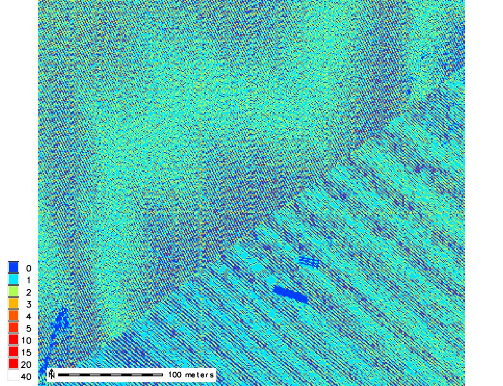
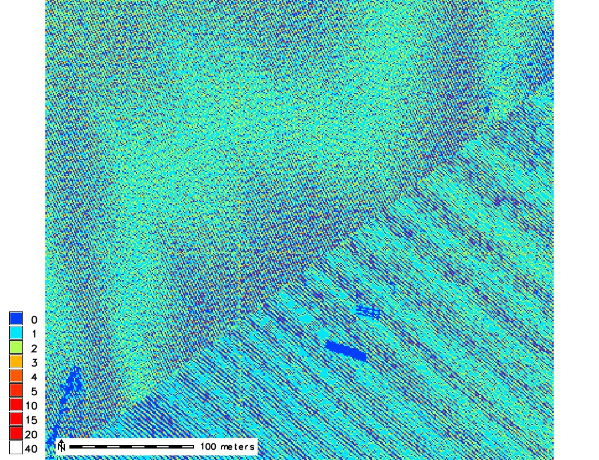
Midpines: number of points per 1m grid cell: for all returns and ground
Analysis of point distribution: SfM
High point densities around trees and building edges
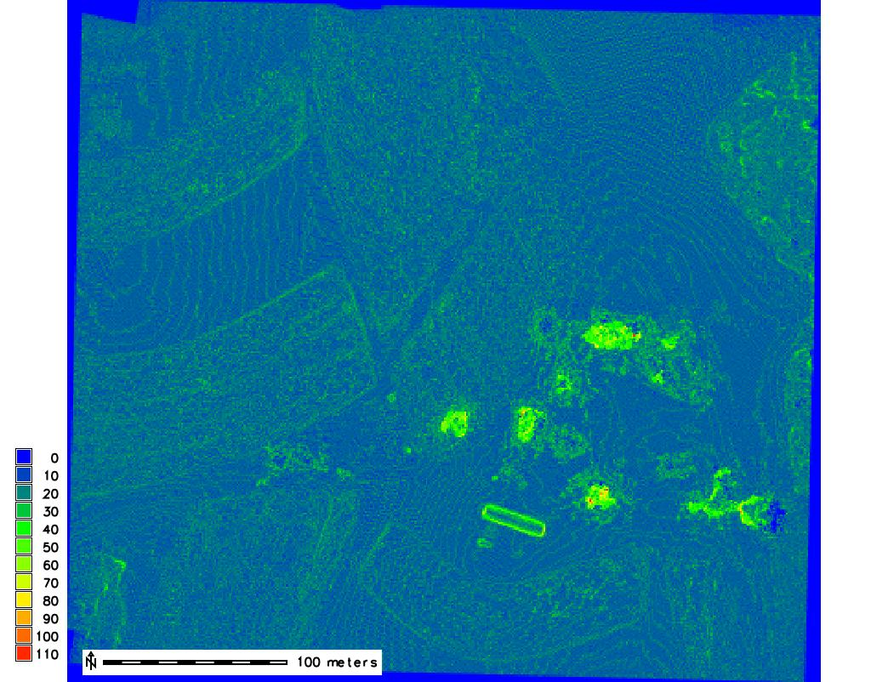
Midpines: number of SfM-derived points per 1m grid cell
Analysis of within cell z-range
Maps of z-values range within 3m grid cell
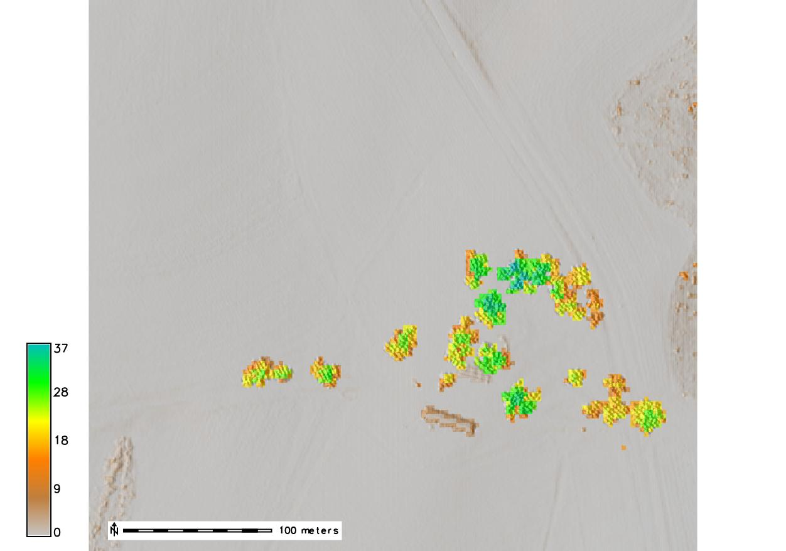 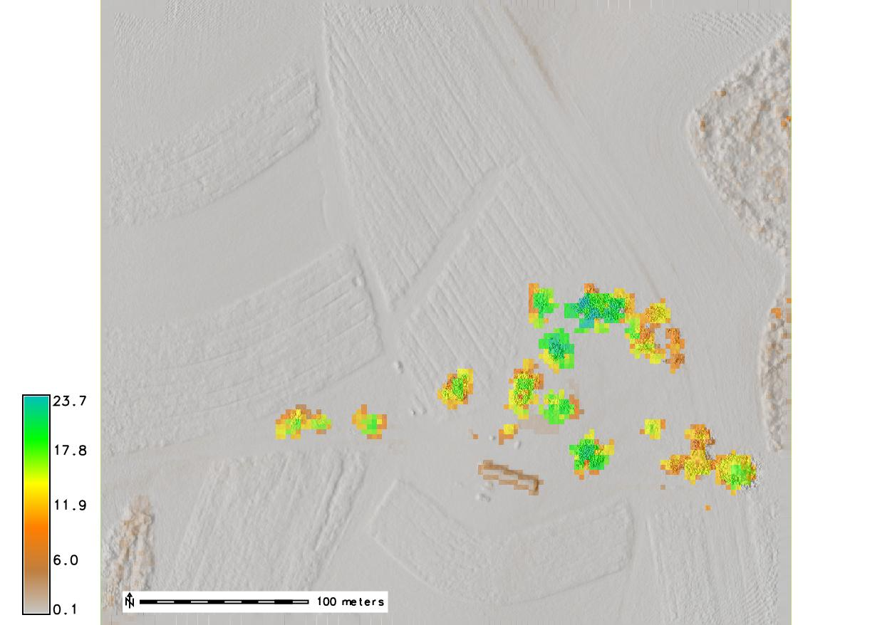
Midpines z-range lidar and UAS, lidar provides better data about the trees than the denser UAS point cloud
Outliers
- Lidar: birds, particles, material properties
- SfM: errors in point matching
- Filtered by using local z-min, z-max or range thresholds

Centennial Parkway - outlier present even in processed data
Bare ground and feature extraction
- multiple returns help but not necessary
- feature or surface needs to be sampled by sufficient number of points
- multiscale curvature-based algorithm by Evans and Hudak
- progressive morphological filter by Zhang
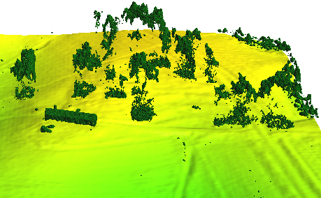
Midpines: above ground point cloud from lidar by MCC in GRASS
Decimation
- thinning of point cloud - subsampling
- reduces the point cloud size - easier to manage data
- thinning threshold should be based on features that need to be preserved
- count-based decimation: preserves variations in density
- grid-based decimation: removes variations in density
- distance and geometry based decimation: more computationally intensive
Decimation: count-based
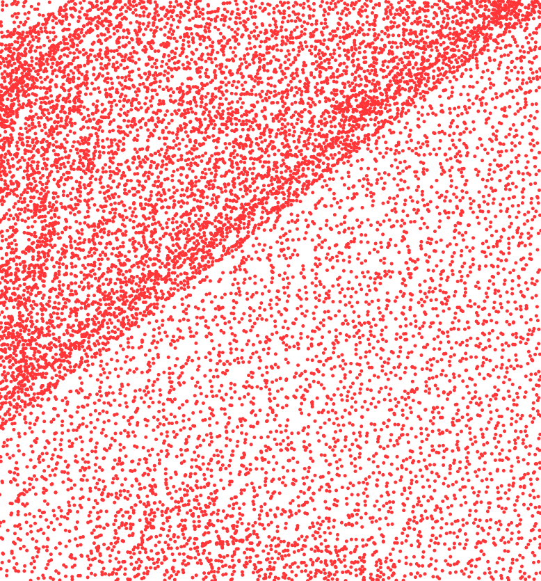 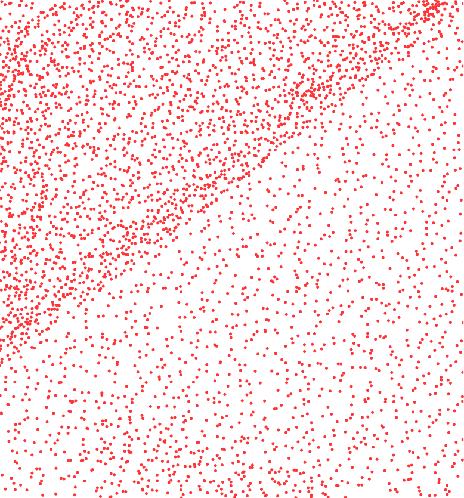
Preserves relative point densities
Decimation: grid-based
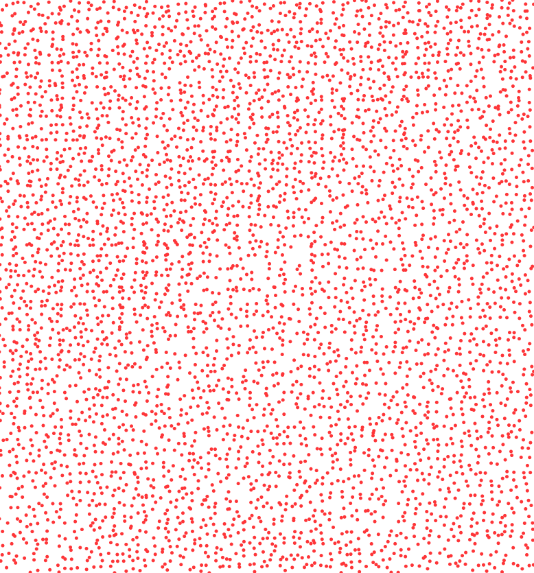
Removes variations in point densities
Computing DEM: binning
- per cell statistics: mean, min, max, or nearest point z-value
- sufficient for many applications
- no need to import the points, on-fly raster generation
- may be noisy, with no-data areas
Computing DEM: TIN
Meshes are standard in 3D engineering and design systems:
- variable resolution based on terrain complexity
- variable level of detail visualization
- 2D triangualtion leads to TIN geometry not optimal for 3D, e.g. triangles on roads, artificial dams in valleys
- harder to combine with other geospatial data
- limited analytics available
- harder to share - limited exchange formats
Computing DEM: interpolation to raster
- supports resolution higher than point density
- results depend on the method used, but most methods work because of high point densities
- high resolution raster DEMs can be massive - works for most analytics, converts to TIN for 3D visualization
- easy to share
Jockey's Ridge lidar 1999
Binning at 1m resolution: many NULL cells 
Jockey's Ridge lidar 1999
Binning at 3m resolution 
Jockey's Ridge lidar 1999
Interpolation at 1m resolution 
You can try TIN for comparison - provide data
Midpines UAS SfM
Low density TIN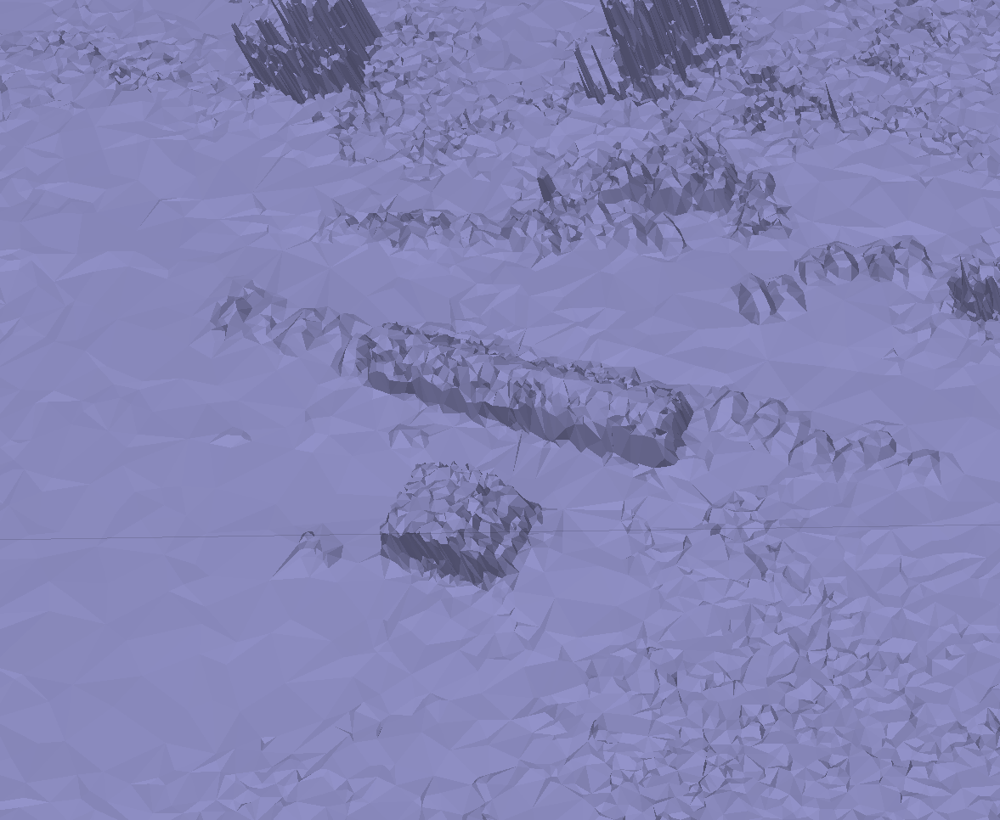
Midpines's UAS SfM
High density TIN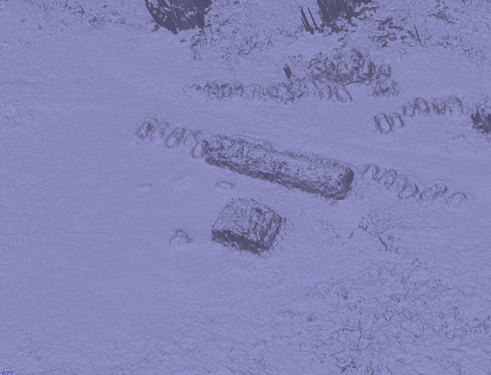
Midpines's UAS SfM
Smoothed high density TIN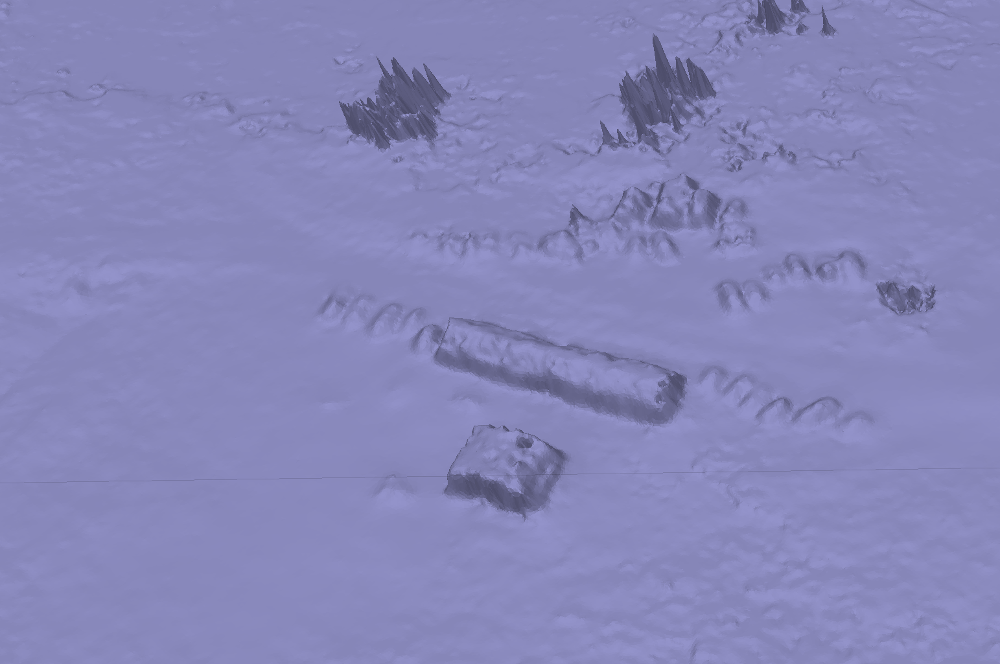
Midpines UAS SFM
High density point could imported to GRASS GIS and interpolated by spline method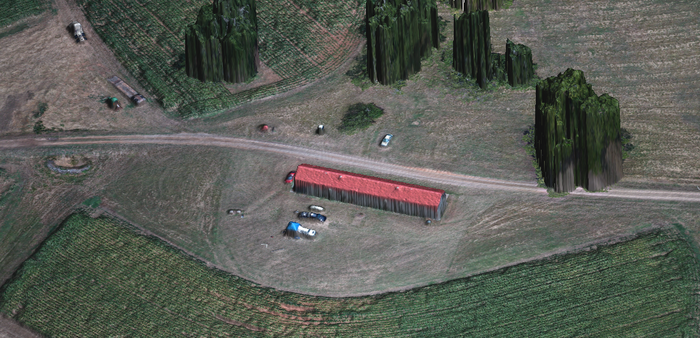
Midpines interpolated DSM
Lidar and UAS SfM based DSM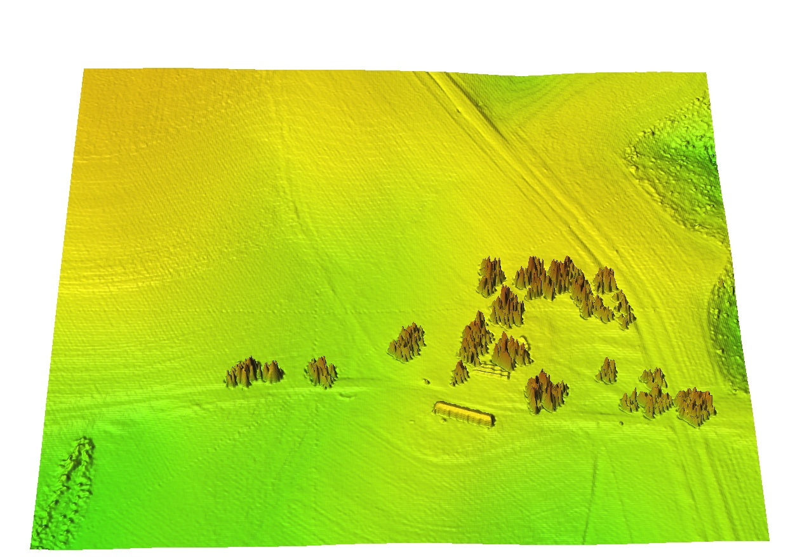 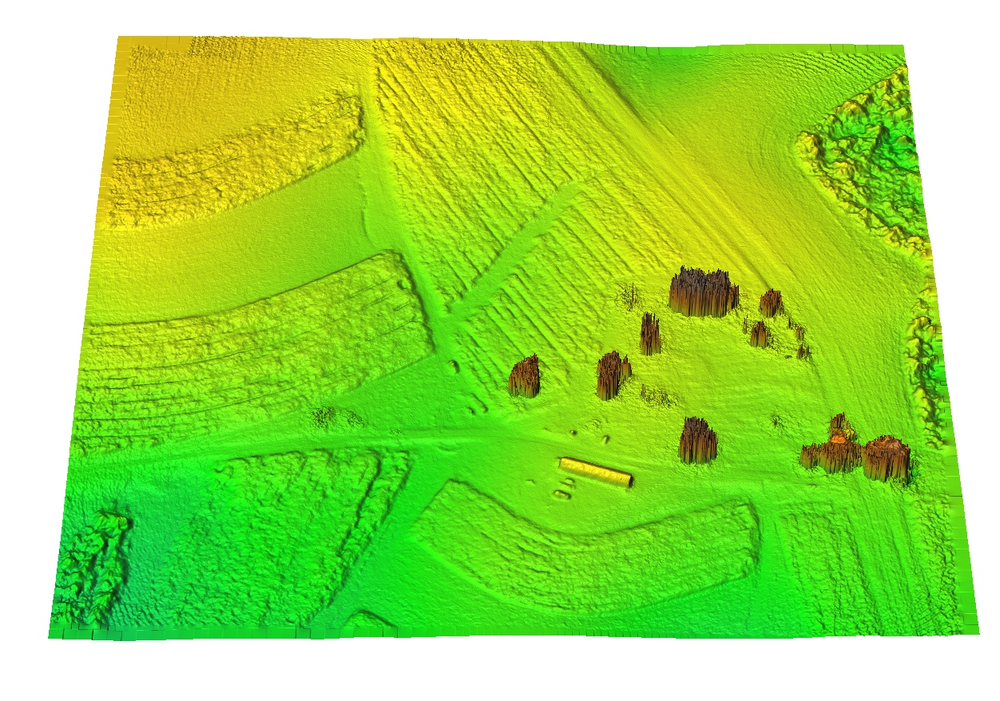
Topographic analysis
Deriving topographic parameters from point cloud based DEMs has challenges:
- DEMs are often noisy and parameters can reflect noise or scan pattern rather than actual topography,
- high resolution leads to representation of landforms by 10s or 100s of points or grid cells
- standard topographic analysis using 3x3 neighborhood leads to noisy patterns of topographic parameters or bias towards point distribution pattern
Topographic analysis using splines
Simultaneous computation of parameters with interpolation- parameters derived from original points rather than raster
- explicit equations for partial derivatives: RST
- tens or hundreds of points can be used
- tuning the level of detail by tension and smoothing parameters
Topographic analysis using splines
Tuning the level of detail with tension parameter 
Topographic analysis using splines
Tuning the level of detail with tension parameter 
Profile curvature and slope maps draped over 1m res. DEM
Vertical point cloud analysis
Voxel-based point analysis and 3D fragmentation index 
Vertical point cloud analysis
3D visualization of vertical fragmentation index crossections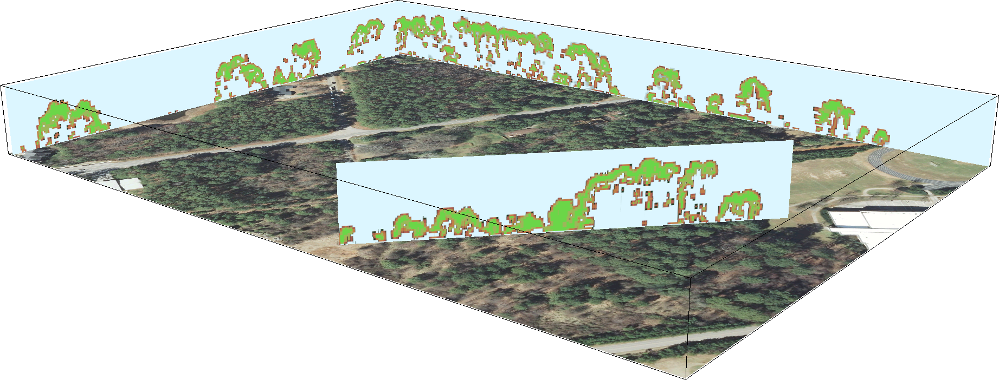
Mamoth Cave Park: data
- classified point cloud in las format
- raw full waveform in lwv format
- imagery

Mamoth Cave Park: canopy

Mamoth Cave Park: bare earth

Voxel models


Petras, V; Petrasova, A; Jeziorska, J; Mitasova, H, 2016, Processing UAV and lidar point clouds in GRASS GIS, ISPRS Archives.
Advances in lidar data acquisition
- Waveform, single photon and multispectral lidar,
- Velodyne (lidar array - small and light)
- Lidar is available for large UAS and helicopters, new small systems are still being tested for accuracy
Lidar data sources
Public data sources (see the links here):
- National map elevation data - used to be CLICK: raw point clouds usually in LAS format
- NOAA Digital Coast: costal point clouds with on-fly binning
- NC Floodplain Mapping: bare Earth: points, 20ft DEM and 50ft DEM with carved channels
- NC data portal QL2 lidar and derived products
- OpenTopography: NCALM data
more about lidar in GRASS at http://grasswiki.osgeo.org/wiki/LIDAR